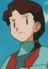

|  |
Ellen |
Pokemon |
Ellen is the mother of Mary. She can be strict but loving mother. She lives and runs a Mareep ranch in a valley. |
 |
Katie |
Pokemon Advanced Generations |
Katie is a Pokemon trainer from Lilycove City. Katie is the pride of Lilycove City, where her fashion, and flair have given her the title "Cool Beauty." She is known for carefully analyzing opponent's moves. |
 |
Nelson |
Pokemon |
Nelson is a young Pokemon Trainer from Johto who dreams of catching Entei. He ste up a complicated series of alarms to delect where Entei could be. |
 |
Olivier Mira Armstrong |
Fullmetal Alchemist Brotherhood |
Olivier Mira Armstrong is Alex Louis Armstrong's old sister. She is in charge of Briggs, the northern military border. She is very skilled with her family heirloom sword which uses unhesitatingly. Olivier is severe woman with a fearsome and commanding presence. |